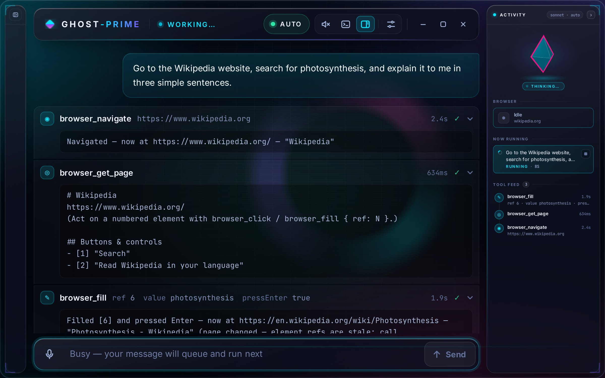

Use a computer just by talking.
A voice assistant that does the task for you, built on a school Chromebook.

How it works
- [1]
You ask, by voice or by typing.
Google turns your voice into text, unless offline voice is on.
- [2]
Claude plans the steps.
Claude does the thinking in today’s demo, so every answer shows a CLAUDE tag. Normally a router can also send quick questions to Google’s free Gemini.
- [3]
The app does each step where you can see it.
It reads the page as a numbered list, then types and clicks:
browser_navigatewikipedia.orgbrowser_get_page[6] Search Wikipedia (search)browser_fill[6] "photosynthesis"browser_get_textPhotosynthesis - Wikipedia
What works, and what’s next
-
Uses websites for you
25 SepWorks · TestedIn its own browser window: reads pages, clicks, fills forms.
-
Files, with undo
25 SepWorks · TestedCreates and moves files, and can undo it.
-
Remembers and reminds
25 SepWorks · TestedRemembers you from day to day. Sets reminders.
-
Listens and talks
Works · By handVoice works in my own testing; the real mic and speaker are only checked by hand.
-
Phone control
In progressBuilt, tested only on a simulated phone.
Who it’s for
Computers expect you to type fast and read small text. Not everyone can.
I haven’t tested it with these groups yet. That’s my next step, and my ask.
Students who type slowly
Say it instead of typing it.
People who find small text hard to read
Hear the answer read aloud.
People new to computers
Ask in plain words.
Busy teachers
Look things up, set reminders.